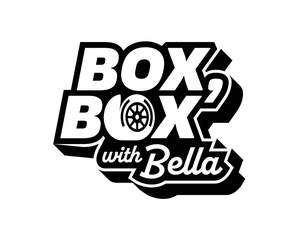

Trade Mark Journal No.2025/032 8 August 2025
UK00004235948 18 July 2025 (16,25,41)
Mark 1
Mark 2

- Class 16
- Printed paper goods; stationery; paper stationery; stickers; photograph prints; art and painting prints; pens, pencils and notepads; books; published matter and magazines; paintings, namely, framed paintings, unframed paintings; printed diaries; printed calendars. .
- Class 25
- Clothing, headgear and footwear; t shirts; baseball caps and hats; beanie hats; beach footwear; bottoms [clothing]; jackets; children’s clothing, footwear and headgear; casual wear; clothing for sport; coats for men and women; denim clothing; detachable collars; boxer shorts; flip-flops; jumpers; socks; footwear for sports; gloves; trainers; headbands; hoodies; jerseys [clothing]; light reflecting jackets; loungewear; sweatpants; neckerchiefs; outer clothing; pyjamas; printed t shirts; polo shirts; rainwear; robes; shirts; shorts; shower caps; swimwear; ties; tops; wellington boots; waterproof and weather resistant clothing, footwear and headgear; yoga clothing.
- Class 41
- Arranging and conducting competitions; organisation of events; arranging and conducting of live entertainment events; arranging and presenting of live performances; arranging, conducting and organisation of music and comedy performances; arranging for ticket reservations for shows and other entertainment events; audio and video editing services; audio, film, video and television recording services; artistic management of live performances; audio and visual production services; audio, video and multimedia production, and photography; conducting of entertainment activities; providing online entertainment content; consultancy services in the field of entertainment; development of formats for television programmes; digital video, audio and multimedia entertainment publishing services; entertainment services; entertainment provided via the internet; entertainment provided via a global communication network; Entertainment services for sharing audio and video recordings; entertainment services in the nature of organizing social entertainment events; entertainment services provided by performing artists; entertainment services provided by on-line streams; information about entertainment and entertainment events provided via online networks and the Internet; Hosting [organising] awards relating to television, films and online content; live comedy shows; live entertainment production services; entertainment production services; production of online entertainment content; organisation of stage shows; television, film and video production services; video recording services; video recordings [not downloadable] provided from the internet; news and reporting services; advisory and consultancy services relating to the aforesaid.
Bella James Productions Ltd